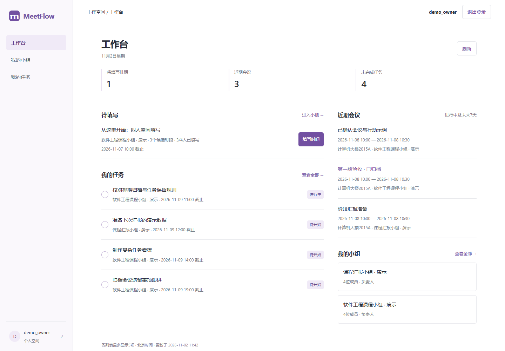
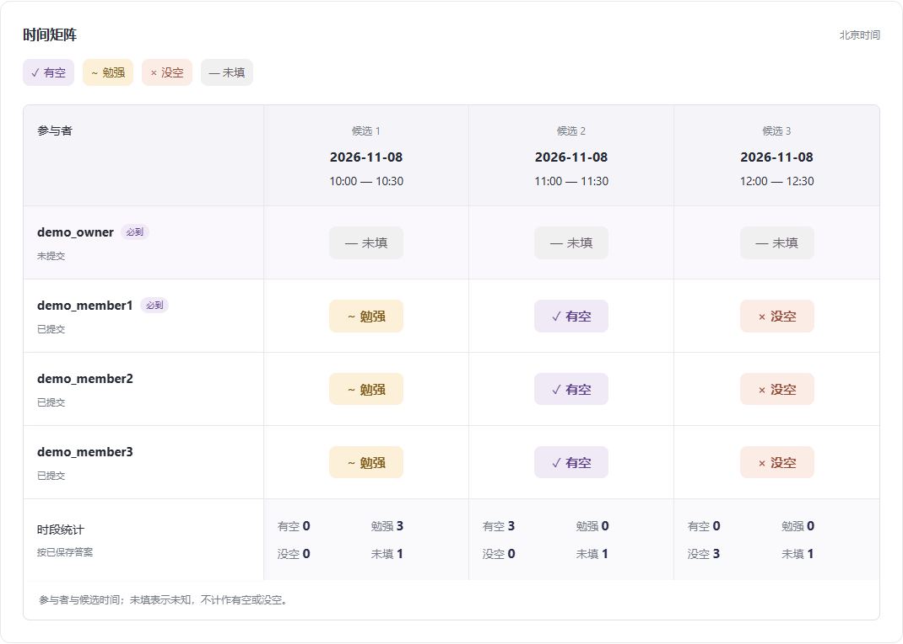
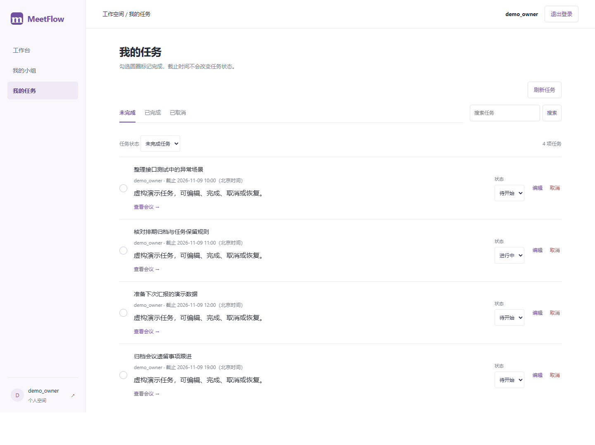

推荐，要说得出理由。
先比较必到冲突，再比较得分、有空人数和时间。第一名也可能有风险，最终由负责人确认。
给课程小组的一本协作手记 / 2026
少翻几屏聊天记录，
多留下一件有着落的事。
从大家的空闲时间出发，找到合适的会议安排，
再把讨论变成有负责人、有截止的任务。
课程项目 · 本地完整演示 · 规则可解释
这一次，周四可以一起聊。
必到成员均有空，再由负责人确认。
有人说有空，有人说“勉强吧”，还有人一直没回。消息一多，时间、关键成员和最后的决定就混在一起。
我们把这些信息放回同一条线上：先收集，再比较；确认之后，纪要和会后任务继续留在这里。
02 / 翻开看看
以下为本地完整应用截图
使用虚构演示账号与数据



先比较必到冲突，再比较得分、有空人数和时间。第一名也可能有风险，最终由负责人确认。
排期关联会议，会议留下议程与纪要，任务继续关联会议。归档整理历史，不把未完成任务一并丢掉。
当前提供本地完整应用。这个介绍页不收集个人日程，也不提供多人在线业务；真人试用和公网应用仍待验收。
04 / 轮到你了
下载专用演示包，在自己的 Windows 电脑上运行。
不需要开通服务器，首次准备完成后可离线演示。
Windows 64 位 · Python 3.11（64位）
含已构建页面与离线依赖，不含你的真实数据库
先装好 Python 3.11（64位），将压缩包完整解压到可写目录。不要在压缩包里面直接启动。
在新电脑创建独立运行环境；包内已提供 Python 依赖，无需安装 Node.js。
保留启动窗口，浏览器打开本机 localhost:8002。用户名 demo_owner，演示密码 MeetFlowDemo2026!。
使用前的小问答
这是项目介绍与获取页。完整应用需要下载后在本机运行；这里没有云端账户或共享数据库。
不会。演示包会在那台电脑生成独立的虚构数据，之后的修改只保存在那台电脑。它不包含当前电脑的真实数据或练习进度。
当前演示服务只接受本机访问。同一局域网共享需要专门配置监听地址、来源验证与防火墙，不能把localhost发给别人就实现。现在推荐每台电脑独立运行，避免展示前改变账户和部署边界。
完整源代码与文档在下方仓库中；PPT、配套讲稿及通俗逻辑讲解位于Presentation目录。也可在仓库提出使用反馈。